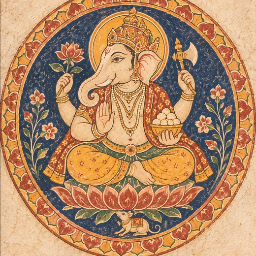
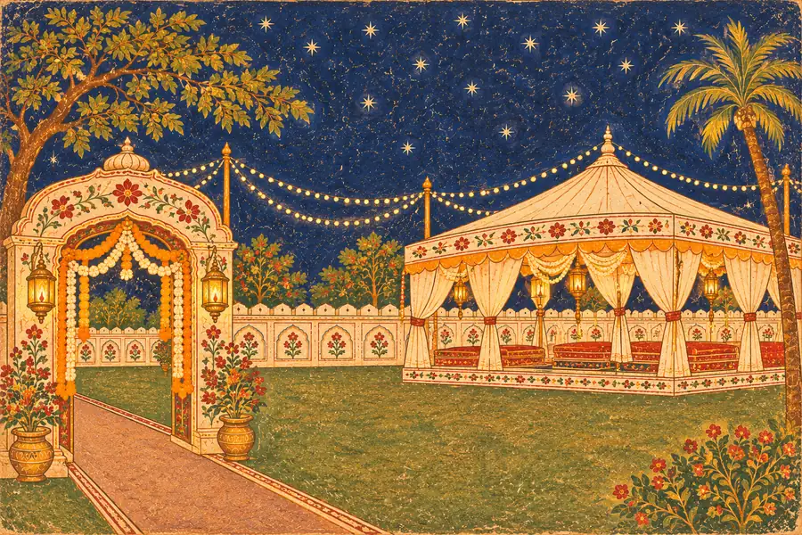

We cordially invite you to celebrate the wedding of
Neeru&Vivek
7th December 2026, Monday
until the Baraat Aagaman

॥ श्री गणेशाय नमः ॥
वक्रतुण्ड महाकाय सूर्यकोटि समप्रभ ।
निर्विघ्नं कुरु मे देव सर्वकार्येषु सर्वदा ॥
With the blessings of the Almighty
Neeru
(Granddaughter of Late Smt. Ankor Devi & Late Shri Pratap Singh Jakhar)
(Daughter of Smt. Sushila Devi & Shri Mahendra Kumar Jakhar)
R/o Vill. Dudi (Presently residing at Pilani), Jhunjhunu
weds
Vivek
(Grandson of Late Smt. Shanti Devi & Late Shri Richhpal Singh)
(Son of Smt. Ompati Devi & Shri Satyavir Singh)
R/o Village Dagroli, Charkhi Dadri
03Day one of fiveThursday, December
Lagan
लगन10:15 AM05Day two of fiveSaturday, December
Baan
बान10:15 AMMehendi
मेहँदी5:15 PM06Day three of fiveSunday, December
Haldi
हल्दी11:15 AMLadies' Sangeet
महिला संगीत6:15 PM07Day four · The weddingMonday, December
Chak Bhaat
चाक भात10:15 AMBaraat Aagaman
बारात आगमन4:15 PMDhukav
ढुकाव7:15 PMPanigrahan Sanskar
पाणिग्रहण संस्कारAs per auspicious Muhurat08Day five of fiveTuesday, December
Vidai
विदाईTaaron Ki Chhaon Mein
तारों की छाँव में
Vishram Vatika
Pilani, Jhunjhunu,
Rajasthan – 333031
Awaiting your presence
सादर आमंत्रित
Bhai-Bhabhi Paksh
- Smt. Pinky – Shri Abhishek Jakhar
- Smt. Suman – Shri Mukesh Jakhar
Nanihal Paksh
- Smt. Sushila – Prof. Sajjan Singh Dhillon
- Smt. Neelam – Shri Chandrabhan Dhillon
Bua-Foofa Paksh
- Smt. Bhateri – Late Shri Ranveer Sheoran
- Smt. Munni – Shri Kapoor Vijarniya
- Smt. Rasmati – Shri Rajveer Sangwan
- Smt. Sushila – Shri Vinod Sangwan
- Smt. Babita – Shri Rajkumar Dairwal
Solicited by · विनीत
Shri Mahendra Kumar Jakhar
Village & Post – Doodi
Ward No. 26, Adarsh Colony, Behind Rani Sati Temple, Pilani, District Jhunjhunu (Rajasthan)
Five lamps, one for each day of celebration
Darshanabhilashi
Shri Atar Singh, Rajpal, Rajendra Singh, Virendra Singh, Krishan Kumar, Yogesh, Umesh, Aashish, Siddharth, Manvik, Hitansh
and the Entire Jakhar Family & Friends
Neeru & Vivek
आपकी प्रतीक्षा में